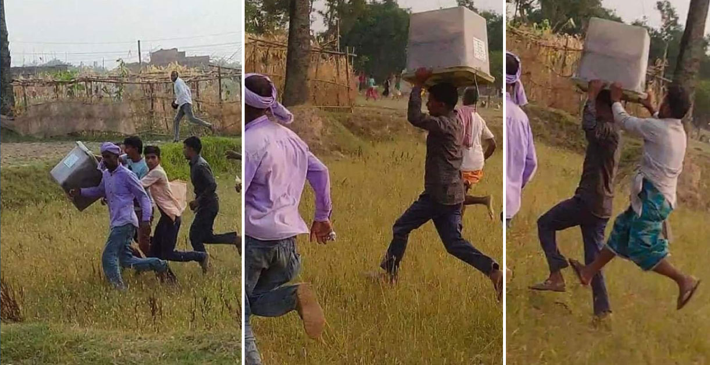

Blockchain in context of Nepal
Imagine you are the candidate in an election that is physical. Your votes are slowly rising up. People prefer you more and are
voting for you, but all of a sudden some people steal your ballot box and destroy it! It's heartbreaking, right? But will you believe?
what I stated is actually true. It's actually a true event that took place in Rautahat, where the locals looted ballot boxes from two polling stations. The incident took place at the polling center in wards 1 and 2 of Yamunamai Rural Municipality during the course of local-level elections. As a result, voting was canceled in both places.

What if the voting system was blockchain based ?Would the voting be canceled ?
Obviously, it's a big no, as it would be a great, reliable system for voting in various ways. Firstly, the voting system would be very convenient, as people wouldn't have to rely on traditional voting stations and could directly vote from home. As blockchain uses cryptographic algorithms to secure data, once a vote is recorded on the blockchain, it cannot be altered or deleted, reducing the risk of vote tampering, and the distributed nature of blockchain means that there is no single point of failure, making it more resistant to hacking and fraudulent activities. There is no need to worry about transparency and trust as each vote is recorded on a public ledger, allowing for easy verification and auditing by anyone, which helps build trust in the electoral process, and the immutable nature of blockchain ensures that all votes are permanent and verifiable, increasing confidence in the accuracy of election results. It can also prevent the double-voting problem by ensuring that each voter can cast only one vote using unique cryptographic identifiers, making the election fair enough. Last but not least, voters can verify that their vote was counted correctly and included in the final tally without compromising their privacy. Therefore, implementing a blockchain voting system can address many of the challenges faced by traditional voting systems, enhance the overall electoral process, foster greater trust and participation among voters, and make the election process fair, especially in Nepal, where corruption and fraud happen from time to time.